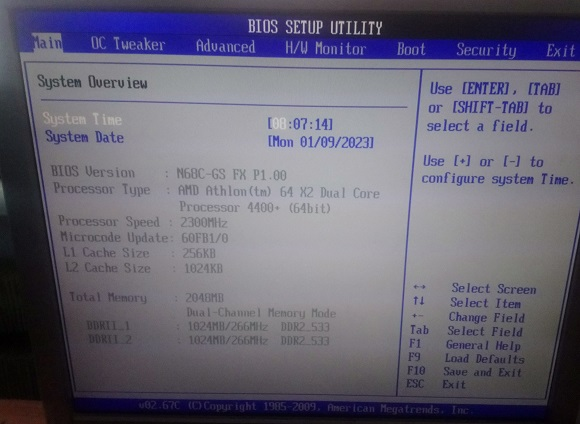
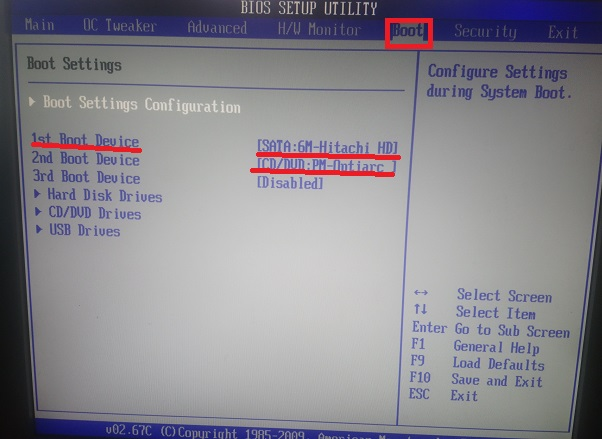
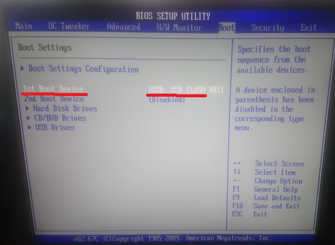
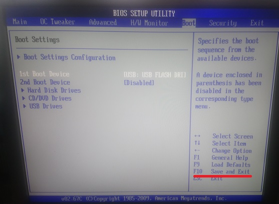
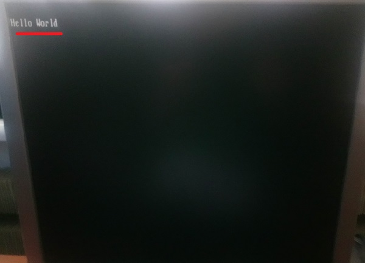

Переходимо на вкладку Boot. Та змінюємо носій загрузки на USB.

В результаті отримаємо.

Для виходу та збереження внесених змін натискаємо клавішу F10.

Після чого має загрузитись не операційна система а наша програма.

Для перезагрузки нажимаємо комбінацію клавіш Ctrl+Alt+Delete. Для
того щоб знову зайти в BIOS, натискаємо багато разів Delete.